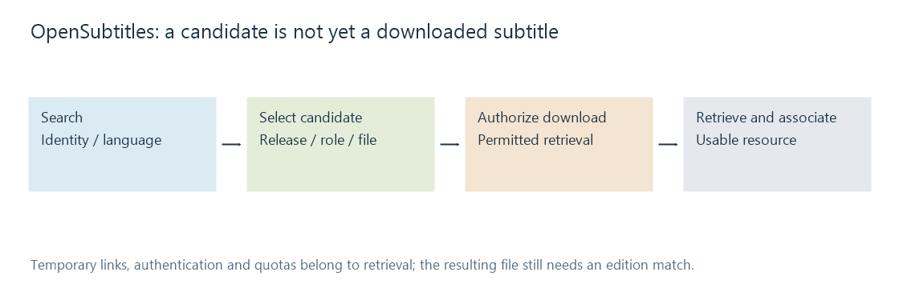

OpenSubtitles
OpenSubtitles provides searchable subtitle candidates and file downloads, with separate release-matching, authentication and quota relationships.
OpenSubtitles provides subtitle searches and downloads. A search produces candidate records; retrieving the selected subtitle produces a file that a player can read.
The service's record identifiers, downloaded file identifiers and the movie's own identity are different things. A candidate appearing in a result list is not evidence that its bytes have already reached the media library.
From search evidence to a file

The provider's public integration code shows a REST workflow for OpenSubtitles.com alongside distinctions from older service interfaces. API/application identification and any authenticated user session have separate roles.
A download can return a temporary resource link. The client then retrieves those bytes and saves the result with its intended media association.
| Stage | Observation |
|---|---|
| Search | Candidate matches the supplied identity/language criteria |
| Candidate selection | A particular release/role/file is chosen |
| Download authorization | The service permits the requested retrieval |
| File retrieval | Subtitle bytes arrive |
| Library association and playback | The resource is identified and presented for the item |
Failure at a later stage does not imply that the search found no match.
A title match and a file match have different scope
OpenSubtitles' published OSHash reference describes a fingerprint built from file size and sample data near the beginning/end. The API uses it as a movie-file matching clue.
A hash-associated candidate can be more specific than a title-only result. It is still useful to inspect language, content role and known cue positions. A file fingerprint is not a quality score for translation or sound descriptions.
A re-encoded movie can retain the same scene timing while acquiring another byte fingerprint. A same-title extended cut can differ in both content and timing. Release matching separates those cases.
Service limits and authentication are operational boundaries
Search, download, rate limits and account entitlements can have different rules. A valid user credential does not automatically remove every limit, and a quota error does not make the subtitle format invalid.
Those policies can change. The current service/account response and official documentation are the relevant evidence; this article does not hardcode a daily limit or price.
Emby's Open Subtitles documentation describes its plugin setup and account association. Learn's concern is the relationship between a found candidate and a successfully available subtitle. Installation and configuration remain in that Support workflow.